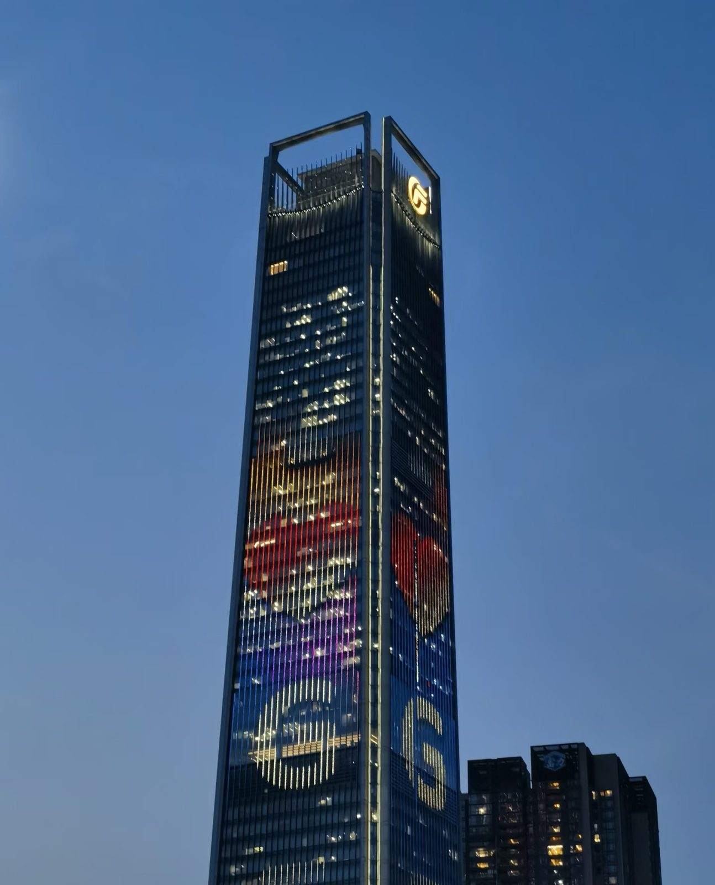

2025.09 — 2026.01
Guangzhou / 广州
Guangzhou / 广州
GF Securities 广发证券
Debt Capital Markets Intern 投行 DCM 债券发行部实习生
Supported bond pricing, bookbuilding and issuance documentation. Turned comparable bonds and market information into pricing references.
参与债券发行定价、簿记建档与底稿归档；通过可比债筛选和市场研究，为定价与发行窗口判断提供支持。
17 bookbuilding sessions 场簿记建档3 pricing reports 篇定价报告18 daily & weekly reports 篇市场日报与周报
